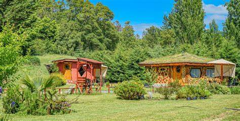
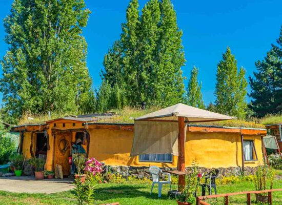

Cabañas Ecológicas "El Volcán"
Naturaleza, descanso y sostenibilidad en Tetela del Volcán.
⬅️ Volver a HospedajeDetalles del Hospedaje
📍 Ubicación: Tetela del Volcán, Morelos
🌐 Sitio Web: www.elvolcanecolodge.com
☎️ Teléfono: +52 735 123 4567
🌟 Clasificación: 4 estrellas ecológicas
Sobre las Cabañas
Estas cabañas ofrecen una experiencia íntima en contacto con la naturaleza, rodeadas de bosque y con vistas a los volcanes.
Perfectas para los amantes del ecoturismo, cuentan con energía solar, sistemas de captación de agua y materiales sustentables.
Galería


Hospedaje con compromiso ambiental y vistas inigualables.